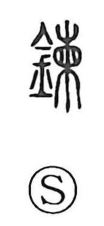

練

Kun: neru, nereru | On: ren
to refine ・ to train ・ to practice ・ to knead
Explanation
練 combines 糸, thread, with the sound element 柬. 柬 shows material contained in a sack and carries an association with working or processing it. In 練, the material is silk.
The thread was heated and washed to make it soft and supple. 練 names both this treatment and the prepared silk produced by it. Related graphs distinguish similar work on other materials: 湅 uses water, 煉 heat, and 錬 metal.
From repeatedly working silk into a better condition, 練 broadens to practice, training, and refinement of a skill. A person’s technique can be worked and improved as the thread is softened and made ready for use. 練習 and 練磨 continue this sustained process of becoming proficient.